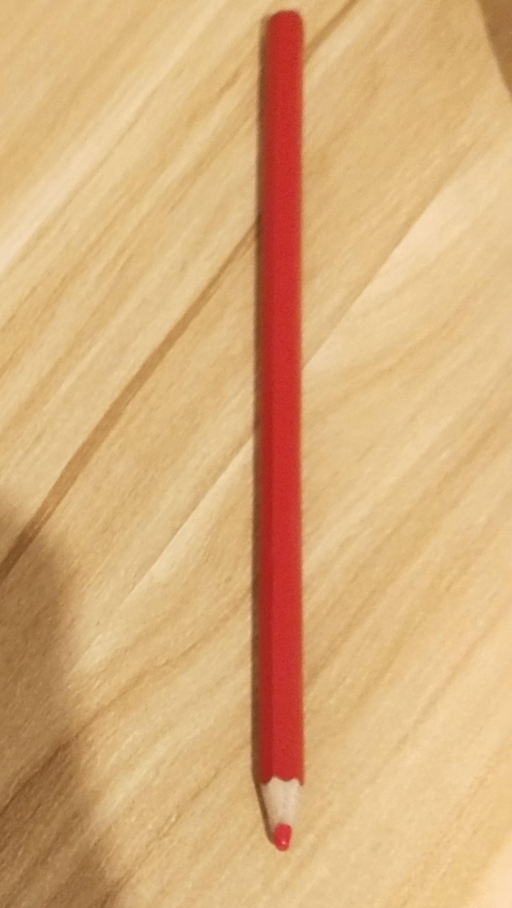
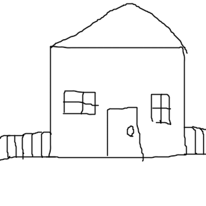

Pencil Tool
Step 1: On the left side on the screen you will see a pencil icon that looks similar to a real life pencil

Click onto the icon.
Step 2: On the blank paper page hold down the left mouse button and start to move the mouse around
You can now draw some pictures with the pencil.

You can also erase the drawing by clicking on the eraser icon and holding the left mouse button while dragging that mouse.
The eraser is in the same toolbar as the pencil is.